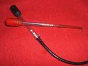
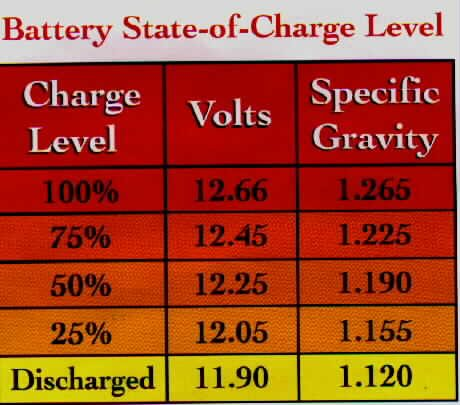

The horn sounds, but it is quiet, rough, or makes a croaking or gargling sound. A horn needs full voltage and a lot of current to sound properly, so a weak battery, a corroded connection or a worn button contact all make it weak. Water, mud and rust inside the horn also spoil the sound. The K-Light fault charts use a hoarse horn as a sign of a weak battery or poor battery connection (PDF pp. 42 to 43).
Is it safe to ride?
With care. A weak horn may not be heard in traffic. Fix it soon.
Quick checks first
- Is it weak with the engine running too, or only with the engine off? Better with the engine running points to the battery.
- Are the indicators and headlight also dim? Suspect the battery first.
- Is the horn packed with mud, or does its opening face upwards so water collects?
- Is the horn touching the mudguard, fork or a panel? Contact damps the sound.
- Is the horn bracket loose?
Diagnose it step by step
1. Is the battery charged? Set the multimeter to DC volts (V with a straight line), 20 V range. Red probe on battery positive, black probe on battery negative, engine off.
- Low: Test and charge a 12 V battery. If it goes flat again, see Battery goes flat after the bike is parked.
- Good: go to step 2.
2. Does the horn sound strong when connected straight to the battery? Unplug its wires and connect it with fused jumper leads (K-Light method, PDF p. 104).
- Still weak or croaky: go to step 3.
- Strong: the horn is fine. The bike's wiring loses voltage. Go to step 4.
3. Can the horn be adjusted or cleaned? Clean mud from the opening. Many horns have an adjusting screw: with the horn connected to the battery, turn it a little at a time until the sound is clear (K-Light chart, PDF p. 46).
- Sound becomes clear: refit the horn with its opening facing down or sideways so water drains out. K-Light 125 horn bolt: 10 to 12 N·m (PDF p. 103).
- Still poor: replace the horn: Test the horn.
4. Where is the voltage lost? With the horn reconnected and a helper pressing the button, set the meter to DC volts. Measure across the horn's two terminals (back-probe the plug), then across the battery.
- Horn reading much lower than battery reading: do Do a voltage drop test on the feed side and the button side.
- Loss in the button: Clean a handlebar switch.
- Loss in the connectors or earth: Clean and seal electrical connectors and Clean and tighten earth connections.
5. Was a louder horn fitted? A horn that draws more current than the original can be weak through the factory wiring and can burn the button contacts. Wire it through a relay with its own fuse: Wire an accessory safely.
Causes, most likely first
| Cause | How to confirm | Fix |
|---|---|---|
| Weak battery | Low voltage, dim indicators | Test and charge a 12 V battery |
| Mud or water in horn, needs adjusting | Weak on direct battery test | Test the horn |
| Horn touching bodywork or loose bracket | Visual | Refit and tighten bracket |
| Corroded connectors or earth | Voltage drop test | Clean and seal electrical connectors |
| Worn horn button contacts | Voltage lost across button | Clean a handlebar switch |
| Bigger horn without a relay | Aftermarket horn fitted | Wire an accessory safely |
Reference values (K-Light 125)
| Item | Value | Source |
|---|---|---|
| Horn mounting bolt | 10 to 12 N·m | PDF p. 103 |